Flor'Insolite
Découvrez des plantes aux caractéristiques inattendues !
Connexion

Forum
Retour
Orchidée Canard
Nom scientifique :
Caleana major
Famille :
Orchidaceae
Genre :
monotypique
Description
C'est une orchidée de taille petite à moyenne, préférant le froid à la chaleur avec une seule feuille allongée de 12 cm de long, de couleur verte sur le dessus, rouge sur le dessous. Les fleurs sont portées par une hampe érigée avec inflorescence de 1 à 5 fleurs, de 15 à 40 cm de long, les fleurs font de 2 à 6,25 cm de diamètre. La floraison a lieu au printemps et en été.
Cette espèce est nommée "orchidée canard volant" en raison de sa fleur. En effet elle ressemble à un canard en vol avec le pétale supérieur représentant la tête un bec bien visible.
Source :
Wikipédia
Localisation
Queensland, Nouvelle-Galles du Sud | Victoria | Tasmanie | Australie-Méridionale
Photos de la communauté
Binetôt vous pourrez poster ici vos propres photos du spécimen en question ! (uniquement pour les utilisateurs ayant un compte)
e
 Retour
Retour